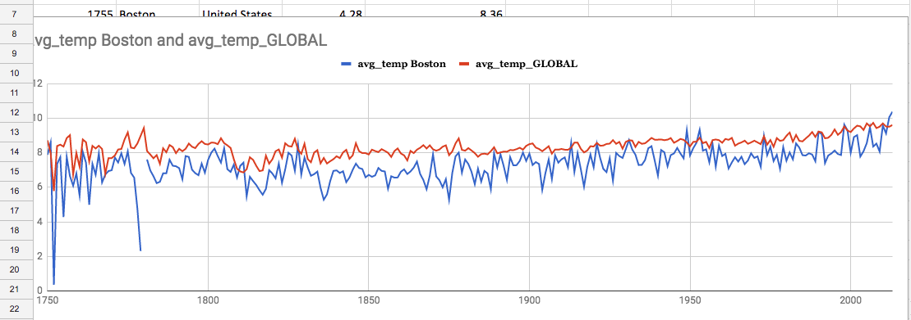

BOSTON —The hottest year in a row the globe has hit record breaking warmth.
The National Oceanic Atmospheric Administration (NOAA) and NASA’s Goddard Institute for Space Studies released a global analysis last week stating that the average temperature across global land and ocean surfaces in 2016 was 58.69 F, which is 1.69 degrees above the 20th century average.
That beat 2015 records by 0.07 degrees. The hottest years on record include 2005, 2010, 2014, 2015 and 2016.
“2016 is remarkably the third record year in a row in this series,” GISS Director Gavin Schmidt. “We don't expect record years every year, but the ongoing long-term warming trend is clear.”
Areas across the world are experiencing record breaking temperature rising, and 2016 is the warmest year on record for North America, according NOAA.
That includes Massachusetts, because the average temperature for the state in the 20th century was 46.9 F.
2016 was the state of Massachusetts fourth hottest year on record with an average temperature of 50.3 F which is 3.4 degrees higher than the 20th century average.
The hottest year for the state is in 2012 with an average temperature of 51.4 F, 4.5 degrees above the average.
In last 10 years, the hottest month on the record in Massachusetts is July 2013 with a temperature of 75 F, and the average temperature for the year was 48.8 F.
In comparison, the coldest month was February of 2015 with an average temperature of 14.6 F, and the average temperature in the year was 48.5 F.
]In a data analysis of the state of Massachusetts and it's average temperatures over the past 20 years shows that the average temperatures for Massachusetts have steadily increased.
The yearly average temperature has not gone below 47 F or higher than 51 F.
4 F may seems not a huge number for us.But, “ It’s a huge number for climate change, it could have impact on agriculture production, and it also have impact on human activity and energy consumption，” according to Dr. Erwan Monier, a principal research scientist for global change at the MIT.
With 4 F increased, some plant such as corn could grow up much early than usual. The most part comes from a few weeks warm in summer time, people were tend to use air conditioner more often than usual, which also lead to more energy consumption.
Monier claims that we have to realize that this is average temperature over 365 days, Changing of 4 F is the change that taking place every single day over the year. It means someday was cooler than usual, and someday was much warm than usual.
“There was a warming trend over last 20 years ,even last 120years,” Monier said.

According to Monier, there may be two reason why the global temperature hit another record in 2016: Human activity,which is gas emission, and El Niños.
El Niños is a complex series of climatic changes that taking place in the Pacific ocean in tropical region, characterized by the appearance of unusually warm. typically in late December. La Niña and El Niños are alternative climate system.
El Niños not only has impact on global temperature, also has impact on The New English region. The result of particular hot weather in last December comes from end of El Niños, from beginning of La Niña.